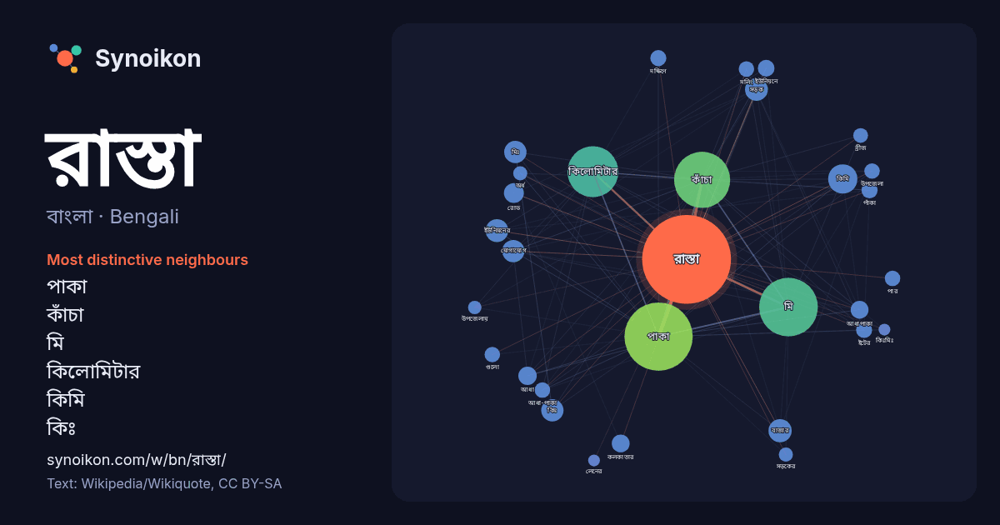

বাংলা · Bengali · word of the day list
রাস্তা
“road” · The words found around it in 1044 instances from Bengali Wikipedia, Wikiquote.

Most distinctive neighbours
- পাকা 150×
- কাঁচা 112×
- মি 102×
- কিলোমিটার 40×
- কিমি 26×
- কিঃ 24×
- মিঃ 22×
- আধাপাকা 16×
- আধা 16×
- সড়ক 14×
- বাজার 14×
- রোড 14×
- পাঁকা 13×
- আধা-পাকা 13×
- সলিং 13×
- ইটের 12×
- যোগাযোগ 12×
- ব্রীজ 12×
- কলকাতার 11×
- অর্ধ 10.0×
× = how many times more often than in general Bengali Wikipedia text.
Most frequent neighbours
- পাকা 234
- মি 173
- কাঁচা 158
- কিলোমিটার 130
- প্রধান 53
- কিমি 43
- অবস্থিত 36
- শহরের 28
- বাজার 27
- ইউনিয়নের 26
- সড়ক 26
- কিঃ 25
- মিঃ 25
- যোগাযোগ 25
- নির্মিত 21
- রোড 20
- গুরুত্বপূর্ণ 19
- আধা 17
- নির্মাণ 17
- আধাপাকা 16
In context
- পরিবহন, অন্যদিকে রাস্তা জনসাধারণের মিথস্ক্রিয়াকে সহজ করে তোলে। রাস্তার উদাহরণগুলোর মধ্যে রয়েছে পথচারী রাস্তা, গলিপথ, ও শহরের কেন্দ্রের রাস্তা যেখানে মাত্রাতিরিক্ত Wikipedia snippets · রাস্তা
- সুরেলা রাস্তা হল এমন একটি রাস্তা, বা একটি রাস্তার অংশ, যার উপর দিয়ে চালিয়ে যাওয়ার দরুণ স্পর্শকাতর কম্পন এবং শ্রুতিগম্য গোলযোগ ঘটায় যা গাড়ির চাকা Wikipedia snippets · সুরেলা রাস্তা
- রাস্তি শাহ হলেন বাংলাদেশের চাঁদপুর এলাকার একজন ইসলাম প্রচারক ব্যক্তিত্ত্ব। তার নামানুসারেই শাহরাস্তি উপজেলার নামকরণ করা হয়েছে। মাজারে রক্ষিত একটি বোর্ড Wikipedia snippets · রাস্তি শাহ
- নির্মিত প্রাচীন রাস্তা বলতে প্রায় সাড়ে ৬শত বছর আগে তৎকালীন খলিফাতাবাদ নগরের প্রতিষ্ঠাতা উলুঘ খান জাহান এটি নির্মিত একটি প্রাচীন রাস্তা । এই রাস্তাটি খননকালে Wikipedia snippets · খান জাহানের নির্মিত প্রাচীন রাস্তা
- হচ্ছে। এর নাম দেয়া হয়েছে “চলন্ত রাস্তা”। এই পদ্ধতি বাস্তবায়নে যে সকল সুবিধা পাওয়া যাবে তা হল- ক। চলন্ত রাস্তা একটি পরিবেশবান্ধব পরিবহন ধারণা। খ। Wikipedia snippets · চলন্ত রাস্তা
- ফুইউ রাস্তা মসজিদ (চীনা: 福佑路清真寺; ফিনিন: Fúyòu Lù Qīngzhēnsì) বা উত্তর মসজিদ নামেও পরিচিত চীনের সাংহাইয়ের হুয়াংপু শহরে অবস্থিত একটি মসজিদ। মসজিদটি নির্মাণের Wikipedia snippets · ফু-ইঔ লু মসজিদ
- রাস্তি ইউনিয়ন বাংলাদেশর ঢাকা বিভাগের মাদারীপুর জেলার মাদারীপুর সদর উপজেলার একটি ইউনিয়ন যা ৮টি গ্রাম নিয়ে গঠিত। রাস্তি ইউনিয়নের মোট আয়তন ১,৮০৬ একর Wikipedia snippets · রাস্তি ইউনিয়ন
- জারির রাস্তা (আরবি: شارع جرير) এটি সৌদি আরবের রিয়াদ শহরে অবস্থিত ১.২৬ কিলোমিটার দীর্ঘ একটি প্রধান সড়ক। এর নামকরণ করা হয়েছে উমাইয়া যুগের খ্যাতিমান আরব Wikipedia snippets · জারির রাস্তা
More Bengali words
- অরণ্য
- আয়না
- ইতিহাস
- ঈশ্বর
- কাজ
- কুকুর
- ক্ষমতা
- খাদ্য
- গান
- গ্রীষ্ম
- ঘড়ি
- ঘণ্টা
- ঘোড়া
- ছায়া
- জননী
- জলবায়ু
- জীবন
- ঝড়
- টাকা
- ট্রেন
- দারুচিনি
- দ্বীপ
- নক্ষত্র
- নীরবতা
- পরিবার
- পানি
- পাহাড়
- প্রকৃতি
- বাগান
- বিজ্ঞান
- বিড়াল
- বৃষ্টি
- ভাষা
- মধু
- মরুভূমি
- মানচিত্র
- মৃত্যু
- রুটি
- লবণ
- শরৎ
- শহর
- শিল্প
- শীত
- সত্য
- সময়
- সেতু
- সোনা
- স্বাস্থ্য
- হৃদয়
Precomputed on 2026-10-09 with default settings (±5 words, medium corpus). The interactive map can refresh it with live data.